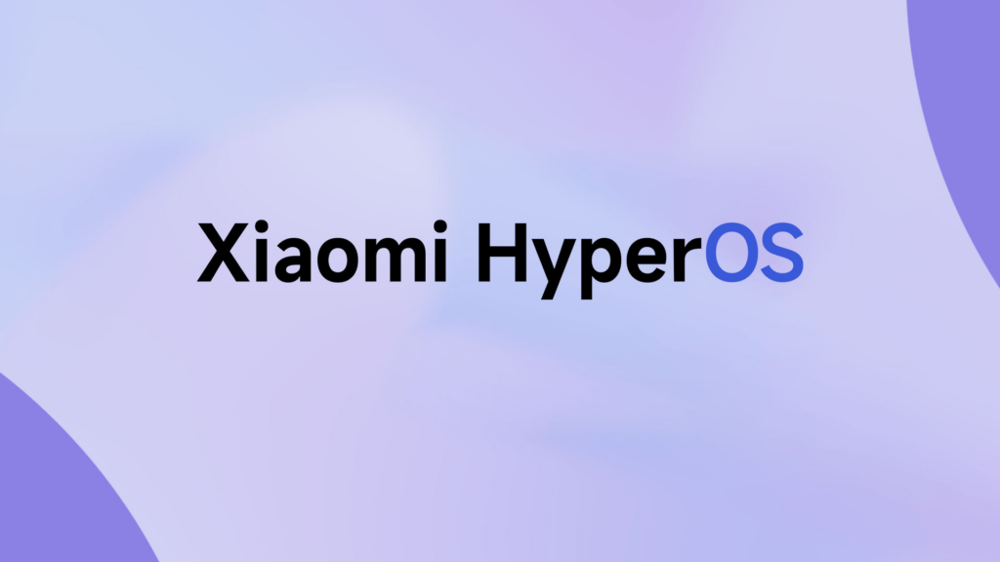

HyperOS ya está disponible para estos cinco teléfonos Xiaomi

Seguimos con las noticias de HyperOS en está página. Hemos hablado desde todos los dispositivos que actualizarán, pasando por sus novedades y las recientes actualizaciones de su launcher.
Hace poco hablábamos del despliegue de HyperOS al mercado global con el primer teléfono Xiaomi en actualizar, el Xiaomi 12T, el cual ya puede disfrutar de todas las novedades de este nuevo sistema operativo y Android 14. Pero no ha venido solo, ya que Xiaomi ha comenzado a liberar HyperOS para más teléfonos de la marca en su versión global y europea.
Cinco nuevos terminales Xiaomi reciben HyperOS en su versión global

Así es, han escuchado bien. Actualmente luego de que el Xiaomi 12T haya recibido de manera oficial la nueva versión del software de Xiaomi, cinco dispositivos más se han sumado al carro y ya pueden instalar HyperOS en su versión global y europea.
Esto solo es el principio, ya que a partir de ahora seguirán llegando versiones de HyperOS a más dispositivos de la compañía de manera global y europea de manera escalonada, así que estén atentos a esta página para no perderse nada.
Los dispositivos en cuestión de los que estamos hablando son:
- Xiaomi 13: OS1.0.1.0.UMCMIXM y OS1.0.1.0.UMCEUXM
- Xiaomi 11T: OS1.0.2.0.UKWMIXM
- Redmi Note 12S: OS1.0.3.0.UHZMIXM
- POCO F5 Pro: OS1.0.1.0.UMNMIXM
- POCO F5: OS1.0.4.0.UMREUXM
Todas estas actualizaciones están basadas en Android 14 y trae mejoras en todos los niveles para los dispositivos que hemos nombrado arriba. Los que posean estos terminales pueden actualizar si pertenecen al programa Mi Pilots o cuando desplieguen la actualización para todo el público, en todo caso tendrás que ir a ajustes y “sobre el teléfono” verás la nueva actualización.